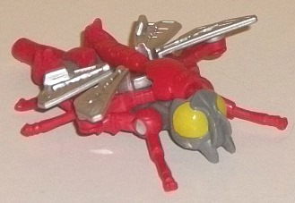
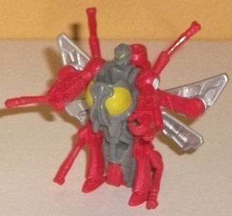
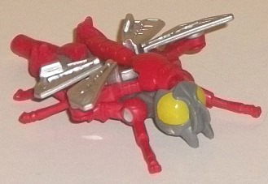
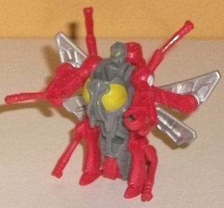
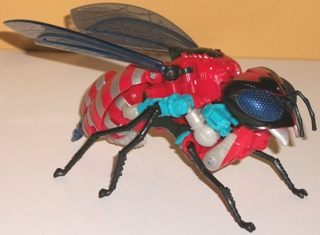
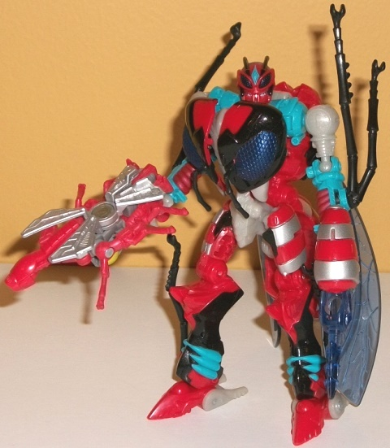

 
Size : Legends partner
Difficulty of Transformation : Very Easy
Color Scheme : Moderately light red, gray, silver, and some pea green
Individual Rating : 4.2
Allegiances : Waruder
(NOTE: Because the following two toys are
repaints, the rest of this is not a full-blown review. This mainly covers
any changes made to the two and their color schemes, and merely compares
them to the original versions of these molds. For a review on Generations
Legends Waspinator-- the mold used for Crusher-- go
here
.
For a review on Generations deluxe Waspinator-- the mold used for Storm
Rider-- go
here
.)
 Crusher
Crusher


Size
: Legends partner
Difficulty of Transformation
: Very
Easy
Color Scheme
: Moderately light red,
gray, silver, and some pea green
Individual Rating
: 4.2
Like the other toys in
this troop builder set, Crusher here is an homage to the Waruders, the
"bad guys" in the Diaclone line that was one of the main predecessors to
G1 Transformers in Japan. In that series, the Mechs were all piloted, so
Crusher is the "pilot" for Storm Rider, even though the two toys can't
interact in any such way. It's a cool idea fictionally, though. Like the
other Waruder pilots in this troop builder set, Crusher has a straight
forward gray color used for his main body and heads, as well as silver
paint on the insect wings and some insect-guts pea green paint used for
both sets of eyes, which is a great fitting shade for these little technorganic
bug guys. What sets Crusher apart is that the rest of his plastic is a
moderately light red shade, which in this case matches the main color of
his larger "shell" quite well. It also provides some pretty decent contrast
against all the gray and silver, though I wish a few paint apps had been
put on the red plastic itself to further break things up a bit more.
No mold changes have
been made to Crusher.
 Storm
Rider
Storm
Rider


Size
: Deluxe (comes in a 4-pack
with
Mudfighter
,
Parasite
,
and
Paralyzer
)
Difficulty of Transformation
: Medium
Color Scheme
: Red, transparent dark
blue, black, and some light sky blue, very light milky gray, silver, dark
metallic blue
Individual Rating
: 8.4
The "Storm Rider" variant
of the Waruder exo-skeletons is the only deluxe toy in this troop builder
set that doesn't have some kind of Transformers homage. Rather, Storm Rider's
color scheme is an homage to the colors on the Japanese "Warudaros" toy,
where the "Waruder" name for these guys comes from. Storm Rider's main
color is a rather straightforward red, with a fair amount of black-- both
colors obviously complement each other well enough, but they're not the
"highlight" of the scheme, in my opinion. The light blue coloration used
on the robot arms, lower legs, and part of the chest is a really nice "sky
blue" shade of the color, and contrasts VERY nicely against both the red
and black. There's also a fair amount of dark blue-- used for the transparent
pieces like the wings, robot eyes, and stinger. This is a pretty decent
color as well, being dark enough to contrast against the red while also
complementing the lighter blue. The more "solid" shade of this color used
on the insect eyes also looks very good, and is just the right shade for
an insect. Unfortunately, the nice blue is somewhat mitigated by the horrible
shade of very light milky gray used for many of the robot parts, such as
the heels, upper arms and hands, and waist. It's a very bland, boring color,
with no "metallic" shade to it at all-- I'm a bit disappointed in this
and expected a bit better from Fun Pub when it came to color shades, honestly.
Storm Rider has an excellent number of paint apps-- there's no one large
area of the figure that is solely one color, from the black "mask" on the
wasp head to the silver on the mandibles, abdomen stripes, and even on
the robot mode teeth, to the red paint on the light blue lower arms, and
the wonderful mish-mash of all the colors on the robot legs, with the black,
light blue, silver, and red all coming together very nicely there. The
silver on the abdomen are the only paint apps I'm not all that fond of,
since the red-and-silver stripe pattern doesn't have as much contrast/look
as good as... well, the striped abdomens on all other decos of this figure.
No mold changes have
been made to Storm Rider. However, like the other Waruders in this 4-pack,
the robot heels are loose, which means the mold can't stand as easily as
the original Waspinator version can, and unfortunately this is not a fixable
problem. That said, it's not a big enough deal where I'd say it ruins the
toy at all; it's just a minor inconvenience.
The Storm Rider/Crusher
set is my second-least-favorite of the Waruder troop builder 4-pack (or
8-pack, depending upon how you want to look at it), but this more has to
do with how excellent the color schemes are for the Parasite and Paralyzer
Waruders than any deficiency on Storm Rider's part. Crusher is tied for
my favorite little pilot Waspinator with the red helping to bring some
life to an otherwide dull scheme. Storm Rider's main colors go together
quite well, and he's got a pretty good number of paint apps, as well--
his main weakness is that his ugly light milky gray should have been darked
a little or made to look more metallic.
Reviews by Beastbot